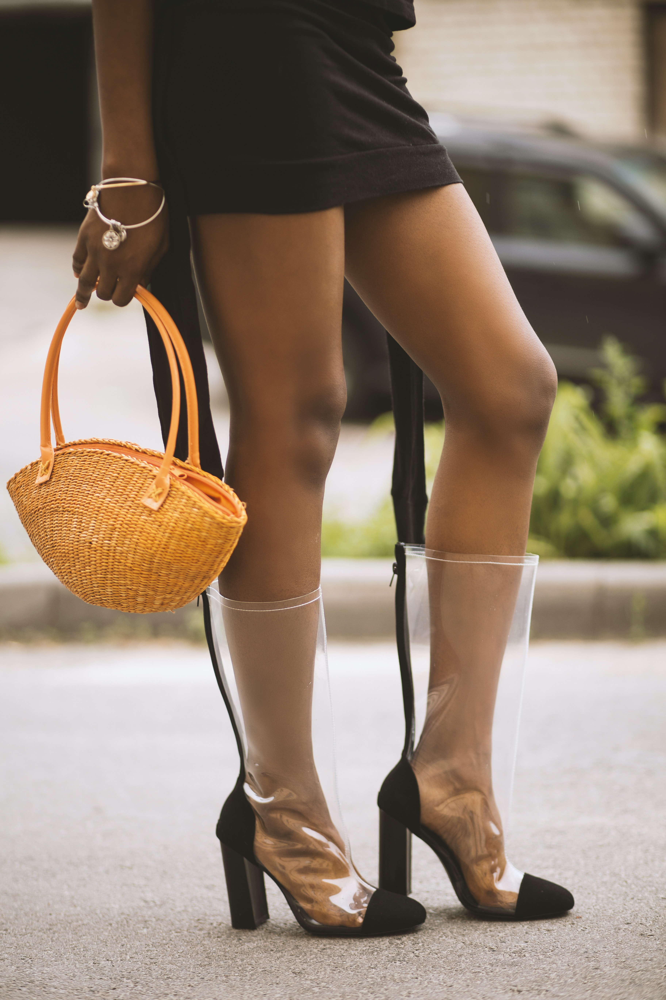
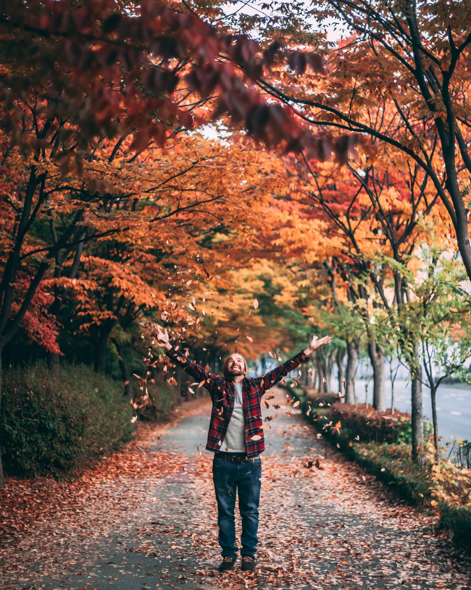
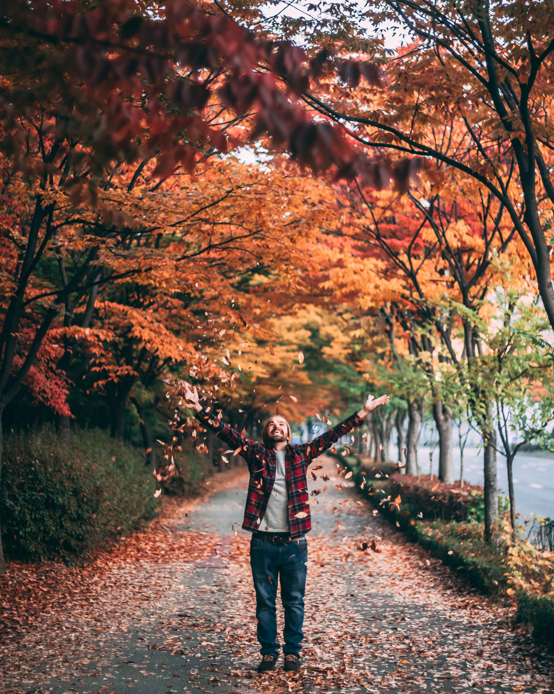

Overview
Purpose
Have you ever had trouble finding the ideal fall wardrobe? My website is here to assist you, nevertheless. I want to introduce the ideal website where both men and women may shop for the comfiest, trendiest, and most exciting clothing. I believe having fall gear is crucial, especially if you reside in a region that gets chilly at that time of year. There aren't many websites dedicated solely to fashion and apparel that do this. For Halloween, Thanksgiving, and Christmas, I will have coats, shirts, pants, and shoes. additionally to other add-ons like belts, caps, and jewelry.
Audience
Men and Women
Branding
Fall Fashion Logo
Style Guide
Color Palette
Palette URL: https://coolors.co/461220-edf7d2-b23a48-fcb9b2-fed0bb| Primary | Secondary | Accent 1 | Accent 2 |
|---|---|---|---|
| [#461220] | [#B23A48] | [#FCB9B2] | [#FED0BB] |
Typography
Heading Font: [Trirong Font]
Paragraph Font: [Trirong Font]
I'd like to provide the best online store where both men and women may purchase the coziest, trendiest, and most fascinating clothing. Through the use of accessories, clothing, footwear, lifestyle, make-up, hairstyles, and body position at a specific moment and location, fashion is a way of autonomous expression and self-determination. I intended to create a fall ensemble that would make both men and women feel assured, satisfied, and happy. People can find all of the aforementioned qualities on my website.
Colored paragraph example
With the colors I have choosen for my website they will promote beauty for fall and engage audience in my website by the organazation and cleanliness thatit brings.
Navigation
Site Map
Content
Home page
First and foremost, Autumn arguably demands the most planning of all the seasons. Women's fall clothing serves largely as a defense against the chilly climate; layering is therefore more than just a matter of style at this time of year. This means that when getting dressed, we need to consider a number of factors. However, the fact that these staples of the season seem to cuddle up to our bodies and keep us warm helps. There's no denying that these fall staples may add a little happiness and comfort to our lives, whether it's a soft, worn-in sweater or a warm layering piece. Fashion is a means of autonomous expression and self-determination through the use of accessories, clothing, footwear, lifestyle, make-up, hairstyles, and body position at a certain time and place. In designing my fall outfit, I wanted both men and women to feel confident, content, and pleased. People will visit my website to find all of the aforementioned characteristics.
Images for the Home page



Women Fashion
In today's world, clothing is an unquestionable human necessity. women wear clothing to express themselves, shield themselves from the elements, and—of course—to hide themselves. We all have at least one article of clothing. Many experts concur that video and photography play a major role in fashion website design because they're essential for displaying products the way we want and mandate in our marketing strategies.Finding something they enjoy and feel good in will probably be one of my websites tasks to complete. They will shop for apparel and accessories they want, such as shoes or sweaters, etc. Having Fall apareal is very important to women for many things. My website is here to target the fashion, warmth and trendy fall fashion ideas. A autumn wardrobe must-have are base layers like t-shirts, tank tops, camisoles, and fine gauge sweaters; this season, I'm seeing more fitted shapes and bodysuits. This fall, you should layer these beneath your bomber jackets, blazers, and other outfit completer pieces. These will all be included on my website. Women will be able to look at these clothing peices and figure out what will suit them best for the fall.
Images for womens page


Men fashion
I'd like to provide the best online store where men may purchase the coziest, trendiest, and most fascinating clothing. Through the use of accessories, clothing, footwear, lifestyle, hairstyles, and body position at a specificmoment and location, fashion is a way of autonomous expression and self-determination. I want men to be able to come to my site and feel like they can fit in with all the trends of fall and feel confident that they will look good. I think that it can be a very cold time of the year so I have many sweaters and long shirts as well as boots for men and belts. I think it can be hard to find the right fashion trends as well as clothing my website is here to adssist them to find just the right clothing and outfits for fall as well as the holidays.
Images for the Mens page


 



Wireframes
Listed below are my wireframes to explain the design as well as the text.
Fall Fashion
I have 12 photos and a large paragraph to explain my home page and the idea of my website.
Women Fashion
I have 6 photos and a large paragraph to explain my womens fashion line.
Men Fashion
I have 6 photos and a large paragraph to explain my mens fashion line.